praise <- function(){
"Hey Nick, You're really awesome!"
}4 Create the package, {praiseme}!
So, let’s write the R package!
4.1 Open RStudio
4.2 Project (upper right) >> New Project >> New Directory
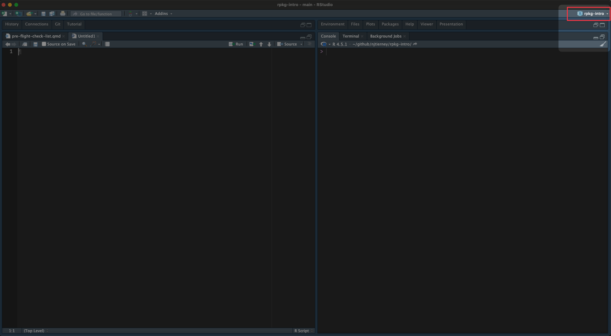
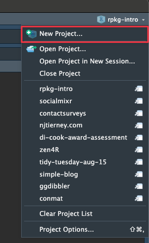
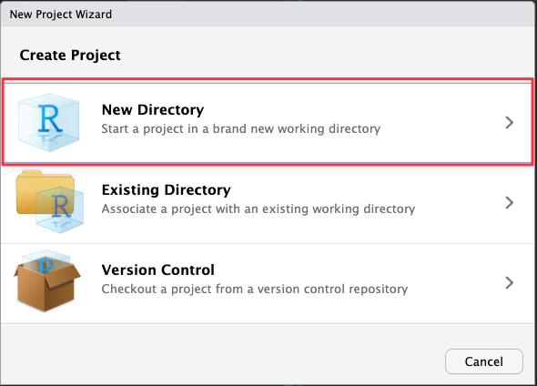
4.3 R Package using devtools
- Select “R Package Using devtools”.
- To find this you may need to scroll down in the menu.
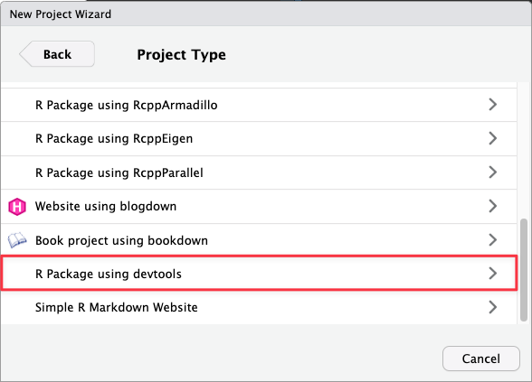
4.4 Enter package name: praiseme
In “Directory Name” write the name of the package. In our case, “praiseme”
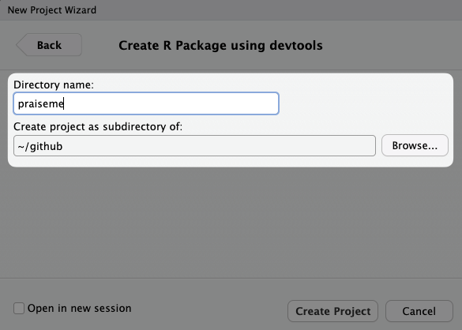
4.5 Verify the project subdirectory path does not contain any spaces
This is because of some inherent limitations to how this part of the software world works. Here are some good and bad examples:
Good:
~/github~/GitHub~/yourname~/YourName
Bad:
~/My Computer~/Your Name
4.6 Click “Create Project”
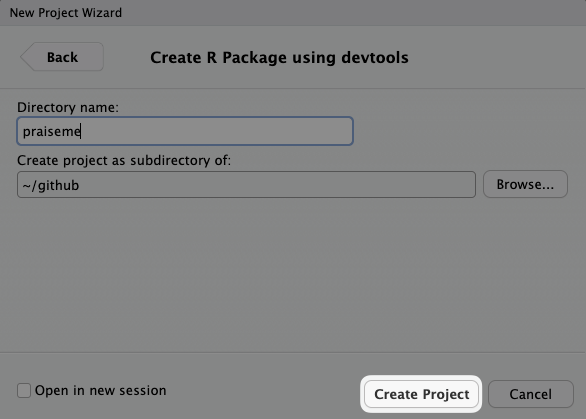
4.7 Click “Build” tab in environment browser
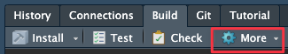
4.8 Click More —> “Configure Build Tools…”
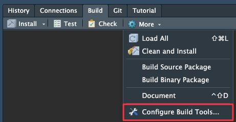
4.8.2 Under “Use roxygen to generate:” Check the following fields
- “Rd files”
- “Collate field”
- “NAMESPACE file”
- “R CMD check”
- “source and binary package builds”
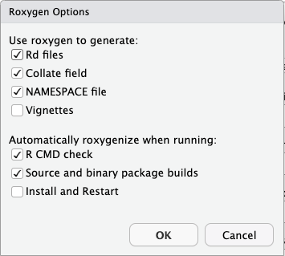
Click OK in Project Build Tools Options
5 You have an R package! What are these files?
So far your directory should looks something like the following:
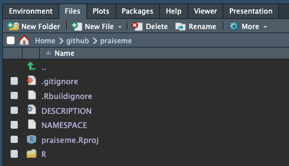
Or, represented as text:
├── .Rbuildignore
├── .gitignore
├── DESCRIPTION
├── NAMESPACE
├── R
└── praiseme.RprojLet’s talk through these files.
5.1 DESCRIPTION
My DESCRIPTION file looks like this, initially
Package: praiseme
Title: What the Package Does (One Line, Title Case)
Version: 0.0.0.9000
Authors@R:
person("Nicholas", "Tierney", , "nicholas.tierney@gmail.com", role = c("aut", "cre"),
comment = c(ORCID = "https://orcid.org/0000-0003-1460-8722"))
Description: What the package does (one paragraph).
License: MIT + file LICENSE
Encoding: UTF-8
Language: en-GB
Roxygen: list(markdown = TRUE)
RoxygenNote: 7.3.3This is metadata about the package. Kind of like reading the packaging label of a can of food. It’s not the contents of the can, but it tells you some important information.
Here’s a marked up summary:
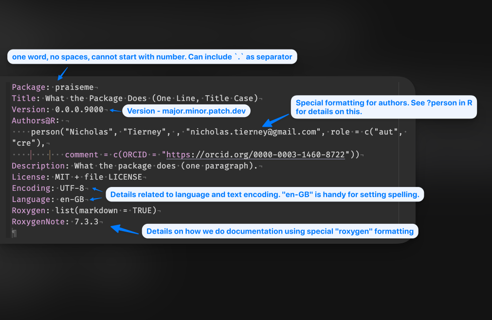
Some key points:
- This metadata is really important and specifically formatted. Not indenting properly, or adding a new line somewhere can sometimes cause your package to not work.
- The DESCRIPTION details here have my name and a few other things set (like
Language: en-GB), because of where we set this up in installation.
5.2 .Rbuildignore
This lists files that we don’t want to package up when we eventually build our R package.
This contains:
^praiseme\.Rproj$
^\.Rproj\.user$Which are specific RStudio files. As you get further along in the package building process, more files will be added to .Rbuildignore.
To build on the food packaging analogy, you could think of this like a dislaimer saying “this food contains no nuts”. We are telling R not to put these files in the R package.
5.3 NAMESPACE
A special file! This will eventually contain all the functions that the user has access to. We don’t touch it by hand. It gets updated automatically via devtools and usethis. It looks like this currently:
# Generated by roxygen2: do not edit by handWe will come back to this!
6 Build/install the package
Now, we have a package! This will actually build, and install! Although we still need to do a few things to make it usable, it’s worthwhile celebrating the small steps!
NoteYour turn
Build the package by navigating to the “build” pane in the top right:
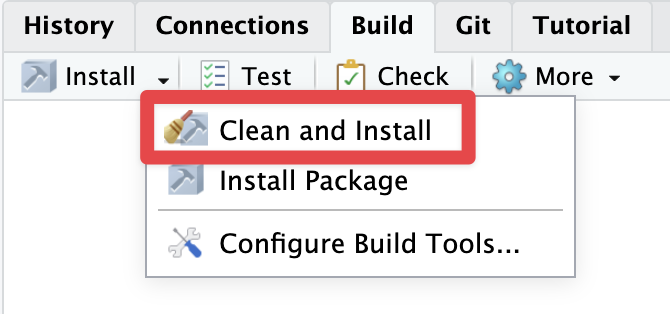
Click this, and see some text like the following appear!
==> devtools::document(roclets = c('rd', 'collate', 'namespace'))
ℹ Updating praiseme documentation
ℹ Loading praiseme
Documentation completed
==> R CMD INSTALL --preclean --no-multiarch --with-keep.source praiseme
No man pages found in package ‘praiseme’
* installing to library ‘/Users/nick_1/Library/R/arm64/4.5/library/_build’
* installing *source* package ‘praiseme’ ...
** this is package ‘praiseme’ version ‘0.0.0.9000’
** using staged installation
** help
*** installing help indices
** building package indices
** testing if installed package can be loaded from temporary location
** testing if installed package can be loaded from final location
** testing if installed package keeps a record of temporary installation path
* DONE (praiseme)7 It’s empty: let’s put something in there!
Where to start? Let’s run some R code!
usethis::use_r("praise")Which gives us:
☐ Modify R/praise.R.And opens the R file for us.
And as a gif:
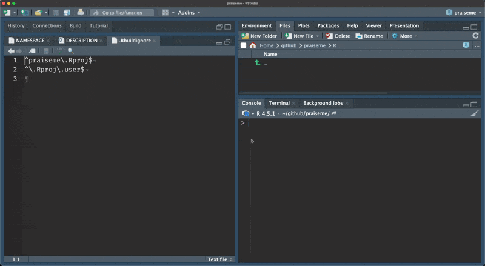
Essentially, we just want to save our files under the R folder.
The {usethis} package makes our life easier by saving us doing the following steps:
- opening up a new, blank, R file
- Saving it in the correct place (in the R directory)
- Naming it
8 Writing the praise() function
We want our code to look something like the following:
Then, we can invoke our praise any time we want, by writing the following:
praise()[1] "Hey Nick, You're really awesome!"This is a function, and if you haven’t seen it before, it allows you to repeat the same code again, but it’s real power is in allowing you to express complex ideas.
We will make this function more complex and awesome, know that.
For now, it will be very simple.
So now, save that file.
How do you go about using this function? We can highlight the code and run it in the console, but we want the cool experience of restarting, and being able to run something like the following:
library(praiseme)
praise()And have it give us our nice praise!
TipYour turn: restart and install
First, restart your R session, so we can start from scratch. You can find this under:
- session >> Restart R
- Or a keyboard shortcut: Cmd + Shift + 0 (on windows/linux: Ctrl + Shift + F10 )
Then:
- Build >> Clean and Install:
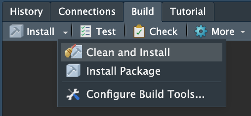
Now try:
library(praiseme)
praise()And it….doesn’t work?
This is because we need to export the function! Let’s talk about this in “exporting and documenting”